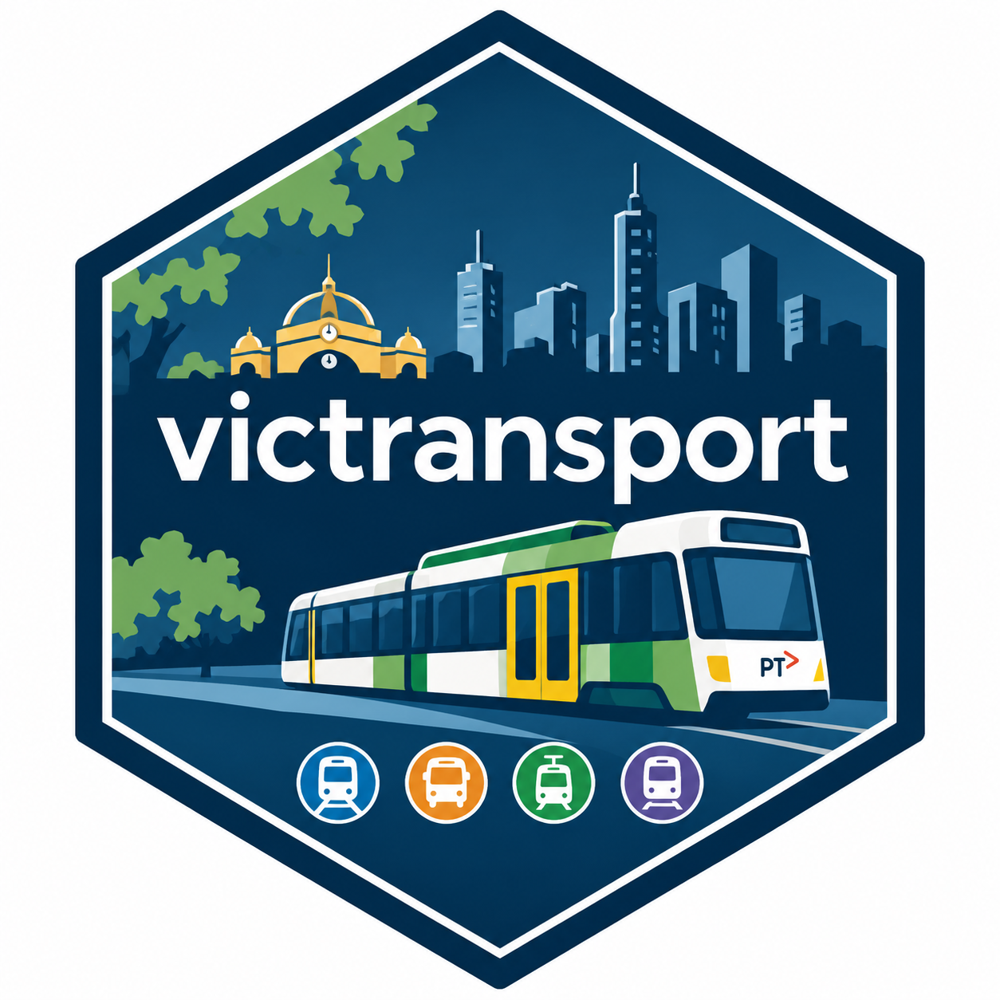

Exploring Victorian Public Transport Patronage
Source:vignettes/exploring-patronage.Rmd
exploring-patronage.RmdOverview
The victransport package provides tools for exploring
reported average daily public transport patronage in Victoria,
Australia.
This vignette demonstrates how to:
- Install the package and access the bundled dataset.
- Explore and summarise public transport patronage.
- Launch and use the interactive Shiny application.
- Interpret the app outputs and understand their limitations.
Installation
Install the development version of victransport from
GitHub:
install.packages("remotes")
remotes::install_github(
"ETC5523-2026/etc5523-assignment-4-wrat0001-rgb"
)After installation, load the package:
1. Explore the dataset
The package includes the patronage dataset, containing
reported average daily patronage by transport mode, day of the week, day
type and reporting month.
data("patronage", package = "victransport")
head(patronage)
#> year month date day_of_week day_type mode
#> 1 2018 1 2018-01-01 Monday Normal Weekday Metropolitan bus
#> 2 2018 1 2018-01-01 Tuesday Normal Weekday Metropolitan bus
#> 3 2018 1 2018-01-01 Wednesday Normal Weekday Metropolitan bus
#> 4 2018 1 2018-01-01 Monday School Holiday Weekday Metropolitan bus
#> 5 2018 1 2018-01-01 Tuesday School Holiday Weekday Metropolitan bus
#> 6 2018 1 2018-01-01 Wednesday School Holiday Weekday Metropolitan bus
#> avg_daily_patronage
#> 1 308450
#> 2 359800
#> 3 400250
#> 4 298500
#> 5 295500
#> 6 299950The dataset covers January 2018 to March 2026.
We can check the reporting period and available transport modes:
range(patronage$date)
#> [1] "2018-01-01" "2026-03-01"
unique(patronage$mode)
#> [1] "Metropolitan bus" "Metropolitan train" "Regional bus"
#> [4] "Regional train" "Tram"
unique(patronage$day_type)
#> [1] "Normal Weekday" "School Holiday Weekday" "Weekend"Each observation represents a specific combination of reporting month, transport mode, day of the week and day type.
2. Summarise patronage
The package provides the exported function
summarise_daily_patronage().
This function calculates the unweighted mean of reported average daily patronage values, grouped by transport mode, day type and day of the week.
patronage_summary <- summarise_daily_patronage()
head(patronage_summary)
#> # A tibble: 6 × 5
#> mode day_type day_of_week mean_daily_patronage n_observations
#> <chr> <chr> <ord> <dbl> <int>
#> 1 Metropolitan bus Normal Weekd… Monday 329452. 93
#> 2 Metropolitan bus Normal Weekd… Tuesday 350910. 93
#> 3 Metropolitan bus Normal Weekd… Wednesday 354643. 96
#> 4 Metropolitan bus Normal Weekd… Thursday 355585. 95
#> 5 Metropolitan bus Normal Weekd… Friday 334818. 94
#> 6 Metropolitan bus School Holid… Monday 261829. 45The resulting table includes:
-
mode: Public transport mode. -
day_type: Day classification. -
day_of_week: Day of the week. -
mean_daily_patronage: Mean of reported daily averages. -
n_observations: Number of reporting observations.
3. Compare selected transport modes
We can filter the summary to focus on metropolitan trains and trams.
mode_summary <- summarise_daily_patronage(
modes = c("Metropolitan train", "Tram")
)
head(mode_summary)
#> # A tibble: 6 × 5
#> mode day_type day_of_week mean_daily_patronage n_observations
#> <chr> <chr> <ord> <dbl> <int>
#> 1 Metropolitan train Normal Wee… Monday 495766. 93
#> 2 Metropolitan train Normal Wee… Tuesday 556234. 93
#> 3 Metropolitan train Normal Wee… Wednesday 563695. 96
#> 4 Metropolitan train Normal Wee… Thursday 569149. 95
#> 5 Metropolitan train Normal Wee… Friday 538652. 94
#> 6 Metropolitan train School Hol… Monday 422099. 45This allows us to examine reported patronage patterns for selected transport modes without modifying the original dataset.
4. Explore different day types
The function also supports filtering by day type.
For example, we can examine patronage during normal weekdays:
weekday_summary <- summarise_daily_patronage(
day_types = "Normal Weekday"
)
head(weekday_summary)
#> # A tibble: 6 × 5
#> mode day_type day_of_week mean_daily_patronage n_observations
#> <chr> <chr> <ord> <dbl> <int>
#> 1 Metropolitan bus Normal Wee… Monday 329452. 93
#> 2 Metropolitan bus Normal Wee… Tuesday 350910. 93
#> 3 Metropolitan bus Normal Wee… Wednesday 354643. 96
#> 4 Metropolitan bus Normal Wee… Thursday 355585. 95
#> 5 Metropolitan bus Normal Wee… Friday 334818. 94
#> 6 Metropolitan train Normal Wee… Monday 495766. 93This helps distinguish normal weekday travel patterns from school holiday weekdays and weekends.
5. Compare reporting periods
We can also restrict the analysis to a selected range of years.
For example, the following code summarises reported patronage between 2022 and 2025:
recent_summary <- summarise_daily_patronage(
years = c(2022, 2025)
)
head(recent_summary)
#> # A tibble: 6 × 5
#> mode day_type day_of_week mean_daily_patronage n_observations
#> <chr> <chr> <ord> <dbl> <int>
#> 1 Metropolitan bus Normal Weekd… Monday 346701. 46
#> 2 Metropolitan bus Normal Weekd… Tuesday 374896. 46
#> 3 Metropolitan bus Normal Weekd… Wednesday 376818. 46
#> 4 Metropolitan bus Normal Weekd… Thursday 379020 45
#> 5 Metropolitan bus Normal Weekd… Friday 355324. 45
#> 6 Metropolitan bus School Holid… Monday 293798. 20The function can combine filters to investigate specific transport modes, day types and reporting periods.
selected_summary <- summarise_daily_patronage(
modes = "Metropolitan train",
day_types = "Normal Weekday",
years = c(2022, 2025)
)
head(selected_summary)
#> # A tibble: 5 × 5
#> mode day_type day_of_week mean_daily_patronage n_observations
#> <chr> <chr> <ord> <dbl> <int>
#> 1 Metropolitan train Normal Wee… Monday 474415. 46
#> 2 Metropolitan train Normal Wee… Tuesday 559966. 46
#> 3 Metropolitan train Normal Wee… Wednesday 564504. 46
#> 4 Metropolitan train Normal Wee… Thursday 576732. 45
#> 5 Metropolitan train Normal Wee… Friday 526151. 456. Interpreting the results
The values in the dataset represent reported average daily patronage, not total monthly passenger journeys.
The summarise_daily_patronage() function calculates
unweighted means of these reported daily averages across the selected
reporting months.
Consequently, the summaries should not be interpreted as combined network-wide daily passenger totals.
Comparisons across years also require care because reporting coverage may differ. In particular, 2026 contains observations only through March.
7. Launch and use the Shiny application
Launch the Victorian Public Transport Explorer:
The application provides four interactive filters:
- Transport mode: Select one or more metropolitan or regional transport modes.
- Day type: Compare normal weekdays, school holiday weekdays and weekends.
- Reporting years: Choose the reporting-year range.
- Reporting months: Select a calendar-month range applied to each selected year. For example, selecting January–June includes those months in every selected year where data are available.
The application automatically updates its summary cards, interactive charts and key findings when filters change.
Understanding the app outputs
The application provides:
- Mean reported daily patronage: The unweighted mean of reported daily averages for the selected observations.
- Reporting months: The number of distinct reporting months represented in the filtered data.
- Monthly trends: Shows how reported patronage changes over time for different day types.
- Day-of-week comparison: Highlights differences across weekdays and day types.
- Transport mode comparison: Compares mean reported daily patronage across selected modes.
Each chart also includes dynamically generated key findings to help users identify relevant patterns.
8. Example: Exploring metropolitan train patronage
Suppose we want to investigate metropolitan train patronage during normal weekdays between 2022 and 2025.
In the Shiny app:
- Select Metropolitan train under Transport mode.
- Select Normal Weekday under Day type.
- Set Reporting years to 2022–2025.
- Keep all reporting months selected.
The summary card displays the mean of reported average daily patronage values for the selected observations.
The monthly trend chart helps identify how patronage changes over the selected reporting period.
The day-of-week chart allows users to compare reported patronage across Monday to Friday and identify which weekdays have higher or lower average values.
Because only one transport mode is selected, the transport mode comparison focuses on metropolitan trains.
These results describe reported daily averages rather than total passenger journeys. They should not be interpreted as total monthly patronage.
Data source
Victorian Government, Monthly Average Patronage by Day Type and By Mode.